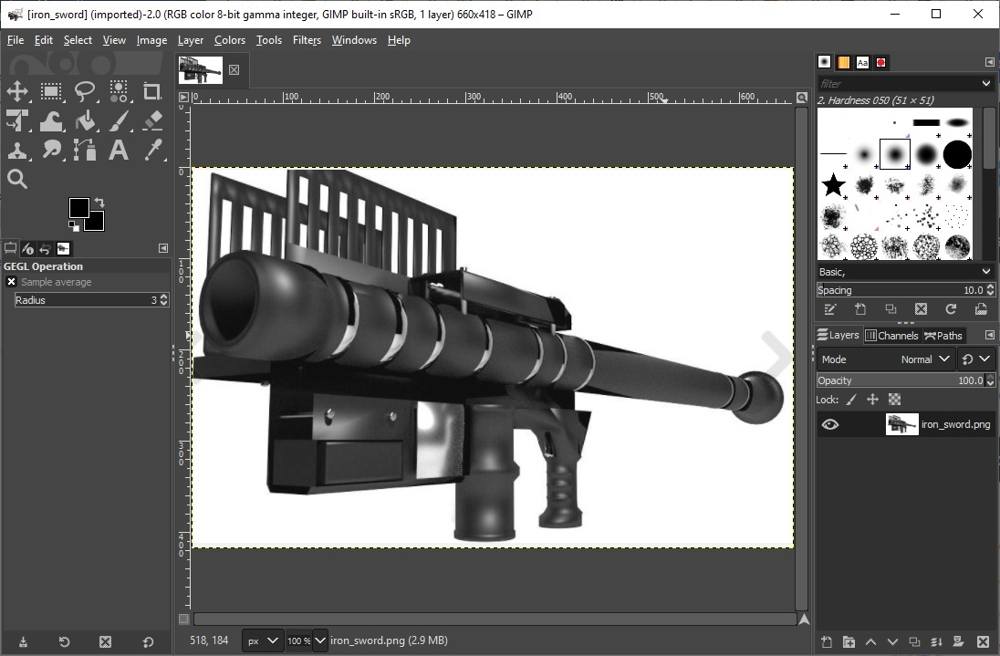
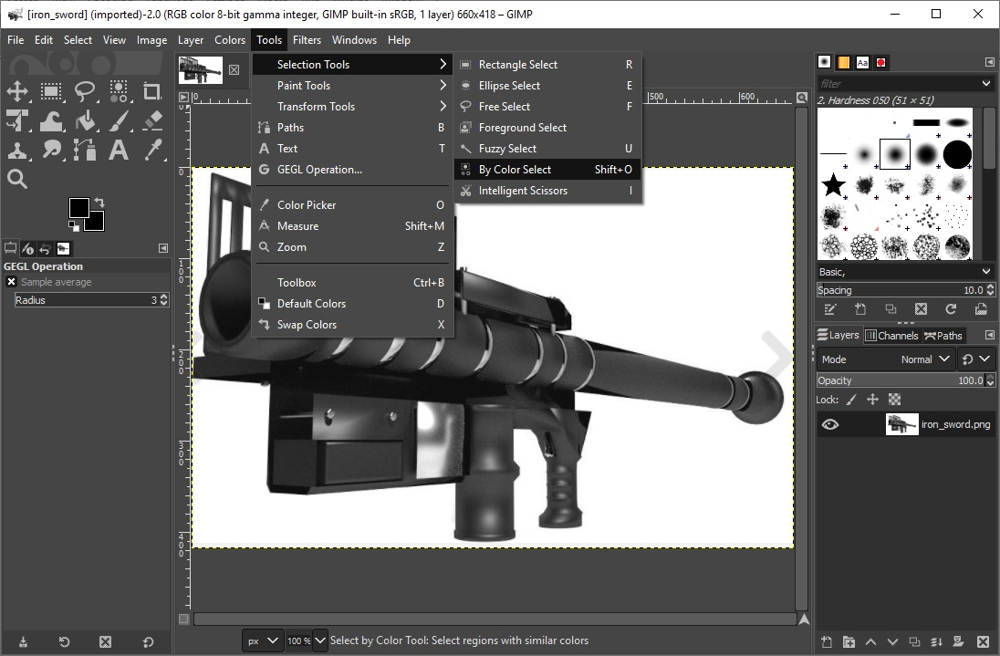
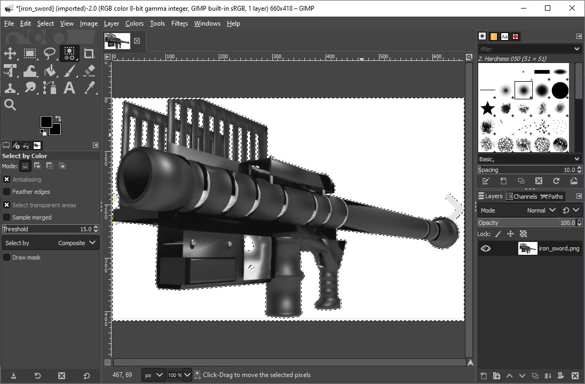
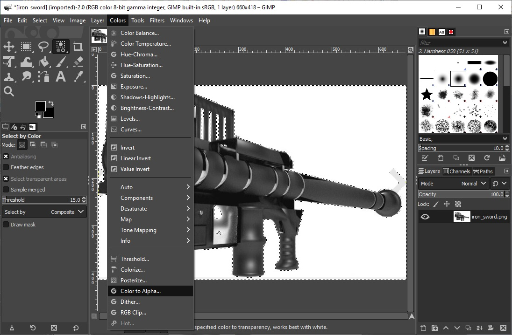

Make a .png image transparent using Gimp
Open the .png file using gimp

Select Tools, Selection Tools, By Color Select

Select the color that you want to be transparent.

Select Colors, Color to Alpha

Export as png (overwrite the existing .png file)